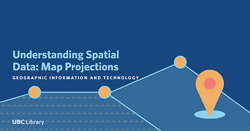

Learning Outcomes
This workshop is intended to familiarize participants with foundational knowledge for working with spatial data. By the end of the workshop participants will be able to:
- describe what a coordinate reference system is
- describe what a map projection is
- know how to find the coordinate reference system of your data
- know to how project your data into a different coordinate system
- find additional resources
Requirements and Setup
The exercises in this workshop will use Esri’s ArcGIS Desktop software, available for download from UBC IT.
If you have a Mac, it will be more challenging to download ArcGIS software, which is more compatible with a Windows operating system.
Please consult this article to learn more.
Students are able to download ArcGIS Desktop for $30 a year.
If you don’t want to pay to use the software, you can sign up for a free trial.
ArcGIS is also available on UBC Library’s lab computers via VMs on a first-come-first-serve basis. Log in with your CWL to access remote labs here: remote labs.
Labs with ArcGIS:
Library Lab - Koerner Library Computer Lab (RM 217) Library Lab - Data/GIS Lab (RM 218 A) Library Lab - Digital Scholarship Lab (RM 497)
If none of these is an option for you and you are attending this workshop from home, you can still follow along and apply the principles learned in this workshop to the GIS software of your choice.
There will be three applications that come with your download of ArcGIS Desktop.
- ArcCatalog: File browser for managing and organizing your data.
- ArcMap: Program to view, edit, and analyze data and create maps, no longer supported after December 2021.
- ArcGIS Pro: Program that has similar functionality to ArcMap, but with additional capabilities such as 3D and more seamless integration with ArcGIS Online. After December 2021, ArcGIS Pro will be the only mapping application that comes with your download of ArcGIS Desktop.
For the purposes of this workshop, we will only be using ArcGIS Pro.
You will also need to download data and project files.
Download the data and extract the compressed files into your Downloads folder.
Outline
- Video introducing projections
- Coordinate Reference Systems
- Datums
- Geographic and Projected Coordinate Systems
- Map Projections
- Choosing the Right Projection
- Exercises using ArcGIS Pro